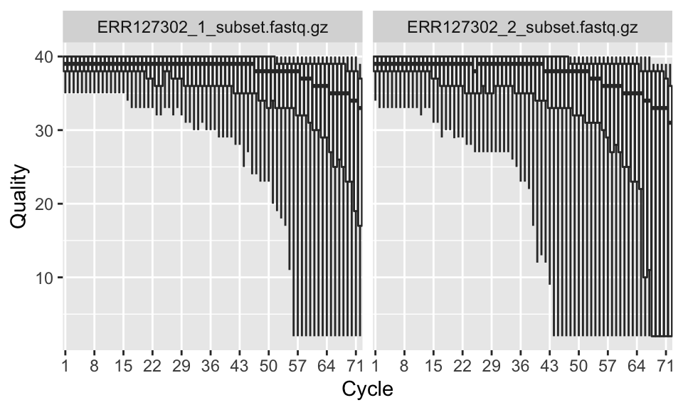
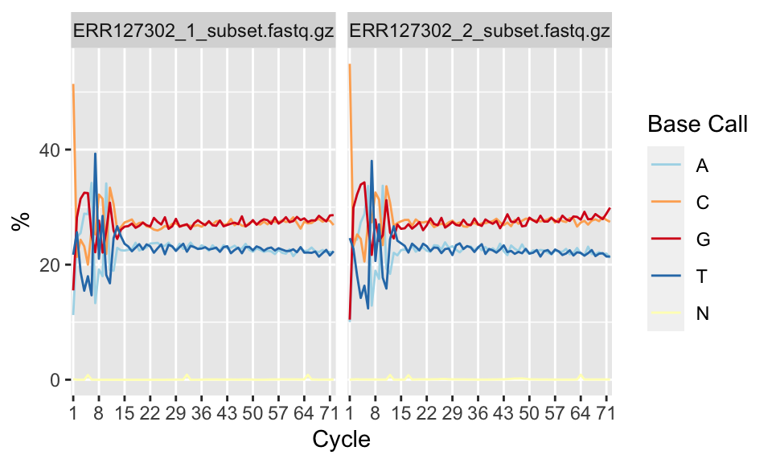
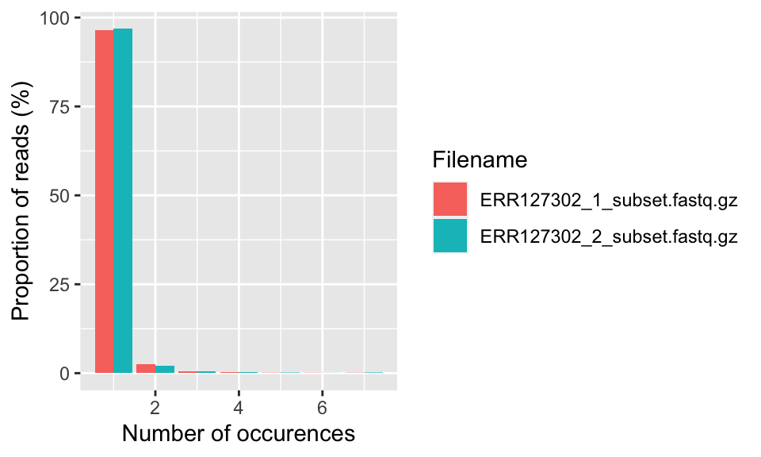

#Load the package
library(Rqc)
#Get the path to the file
folder <- system.file(package="ShortRead", "extdata/E-MTAB-1147")
# Feeds fastq.qz files in "folder" to quality check function
qcRes <- rqc(path = folder, pattern = ".fastq.gz", openBrowser=FALSE, outdir="outputs")2 Lab 2: Quality Check, Processing & Alignment
3 Quality control and processing of high-throughput sequencing reads
3.1 Learning objectives
Click to expand
By the end of this lab you will be able to:
- Understand FASTA and FASTQ file formats
- Understand key concepts in sequencing quality control (QC)
- Perform basic QC/QA on HTS sequences using various tools
- Understand common QC metrics (e.g., N50, mean read length, read length distribution)
- Understand the different QC/QA strategies between short and long reads
- Interpret visual summaries of read quality
4 Lab 2 QC for high-throughput sequencing data
4.1 Introduction to quality check and processing of high-throughput sequencing reads
Advances in sequencing technology are helping researchers sequence the genome deeper than ever. These sequencing experiments typically yield millions of reads (or billions of base pairs) and these reads have to be further processed, quality checked and aligned before we can quantify the genomic signal of interest and apply statistics and/or machine learning methods. For example, you may want to count how many reads overlap with your promoter set of interest or you may want to quantify RNA-seq reads that overlap with exons. Post-alignment operations are usually, but not always, similar to operations on genomic intervals. In this lab we will introduce the fundamentals of read processing and quality check, and we will show how to do those tasks in R. The read quality check and processing is a fundamental step in all high-throughput sequencing analyses.
Note
Note: every sequence resulting from a high-throughput sequencing run is referred to as a read.
4.2 FASTA and FASTQ formats
High-throughput sequencing reads are usually output from sequencing facilities as text files in a format called “FASTQ” or “fastq”. This format is designed to handle base quality metrics output from sequencing machines. In this format, both the sequence and quality scores are represented as single ASCII characters. The format uses four lines for each sequence, and these four lines are stacked on top of each other in text files output by sequencing workflows. Each of the 4 lines will represent a read.

Line 1 begins with the ‘@’ character and is followed by a sequence identifier and an optional description. This line is utilized by the sequencing technology, and usually contains specific information for the technology. It can contain flow cell IDs, lane numbers, and information on read pairs. Line 2 is the sequence letters. Line 3 begins with a ‘+’ character; it marks the end of the sequence and is optionally followed by the same sequence identifier again in line 1. Line 4 encodes the quality values for the sequence in Line 2, and must contain the same number of symbols as letters in the sequence. Each letter corresponds to a quality score. Although there might be different definitions of the quality scores, a de facto standard in the field is to use “Phred quality scores”. These scores represent the likelihood of the base being called wrong.
4.3 Before we begin - rstudio project and GitHub integration**
Start a
GitHubrepo for this lab.Start a version control Rstudio for this project and connect your
GitHubrepo to it - this is a good working practice, new project = new Rstudio project.Make a
data/andoutputs/folder in your project directory. Downloaded files should go todata/, and all generated output files should be directed tooutputs/. Make sure to add both of these folders to your.gitignore.Start a Quarto or Rmarkdown file for the report for this lab.
4.4 Background
Before starting genome assembly or other downstream analyses, it’s essential to assess the quality of sequencing reads. This ensures the data are suitable for your goals and helps detect issues like low-quality bases, adapter contamination, or overly short reads.
This lab focuses on both short-read (Illumina) and long-read (Oxford Nanopore) QC. You’ll use command-line and R-based tools to visualize quality and interpret results. We will cover those platforms in depth during lecture, but Illumina produces reads that are a few hundred bases long (usually up to 500bp), whereas Oxford Nanopore sequencers can produce reads that are hundreds of thousands of nucleotides in length. However it is considered more error prone.
4.5 Quality check illumina reads
Load the
Rqcpackage and get the path to the compressedfastq.gzfiles that come with it.Run the
rqc()function which performs a comprehensive quality check on short read files and obtains an object with sequence quality-related results. We are using example fastq files from the ShortRead package.
4.5.1 Sequencing quality per base/cycle
Now that we have the qcRes object, we can plot various sequence quality metrics for our fastq files. We will first plot “sequence quality per base/cycle”.
rqcCycleQualityBoxPlot(qcRes)This plot, shown below, depicts the quality scores across all bases at each position in the reads.

In our case, the x-axis in the plot is labeled as “cycle”. This is because in each sequencing “cycle” a fluorescently labeled nucleotide is added to complement the template sequence, and the sequencing machine identifies which nucleotide is added. Therefore, cycles correspond to bases/nucleotides along the read, and the number of cycles is equivalent to the read length.
Long sequences can have degraded quality towards the ends of the reads. Looking at quality distribution over base positions can help us decide to do trimming towards the end of the reads or not. A good sample will have median quality scores per base above 28. If scores are below 20 towards the ends, you can think about trimming the reads.
4.5.2 Sequence content per base/cycle
Per-base sequence content shows nucleotide proportions for each position. In a random sequencing library there should be no nucleotide bias and the lines should be almost parallel with each other. The code below shows how to get this plot. The resulting plot is shown in the figure below.
rqcCycleBaseCallsLinePlot(qcRes)
However, some types of sequencing libraries can produce a biased sequence composition. For example, in RNA-Seq, it is common to have bias at the beginning of the reads. This happens because of random primers annealing to the start of reads during RNA-Seq library preparation. These primers are not truly random, which leads to a variation at the beginning of the reads. Although RNA-seq experiments will usually have these biases, this will not affect the ability of measuring gene expression.
In addition, some libraries are inherently biased in their sequence composition. For example, in bisulfite sequencing experiments, most of the cytosines will be converted to thymines. This will create a difference in C and T base compositions over the read, however this type of difference is normal for bisulfite sequencing experiments.
4.5.3 Read frequency plot
This plot shows the degree of duplication for every read in the library. A high level of duplication, non-unique reads, is likely to indicate an enrichment bias. e.g. some regions of the genomes are over represented compared to others. A potential cause for these could be issues with PCR artifacts. PCR is a common step in some sequencing library preparation protocols, which creates many copies of the sequence fragment.
In some cases we will expect high degree of duplication, for example in RNA sequencing data the non-unique read proportion can reach more than 20%. However, the degree of duplication generally stems from genes simply being expressed at high levels. This means that there will be many copies of transcripts and many copies of the same fragment. Since we cannot be sure these duplicated reads are due to PCR bias or an effect of high transcription, we should not remove duplicated reads in RNA-seq analysis. However, in some other cases duplicated reads are more likely to be due to PCR bias and one might consider removing them.
rqcReadFrequencyPlot(qcRes)
4.5.4 Over-represented k-mers & adapter overrepresentation plots
Over-represented k-mers along the reads can be an additional check. If there are such sequences it may point to adapter contamination and should be trimmed. Adapters are known sequences that are added to the ends of the reads and play a role in the sequencing reaction. This kind of contamination could also be visible at “sequence content per base” plots. In addition, if you know the adapter sequences, you can match it to the end of the reads and trim them. The most popular tool for sequencing quality control is the fastQC tool, which is written in Java. It produces the plots that we described above in addition to k-mer overrepresentation and adapter overrepresentation plots. The R package fastqcr can run this Java tool and produce R-based plots and reports. This package simply calls the Java tool and parses its results. Below, we show how to do that.
One of the great things about fastQC (and sequali as well which you will use later on) is that it produces reports compatible with the multiQC platform.
# Aggregating multiple fastqc reports into a data frame
library(fastqcr)
# Demo QC directory containing zipped FASTQC reports
qc.dir <- system.file("fastqc_results", package = "fastqcr")
qc <- qc_aggregate(qc.dir)
qc
# Inspecting QC problems
# See which modules failed in the most samples
qc_fails(qc, "module")
# Or, see which samples failed the most
qc_fails(qc, "sample")
# Building multi QC reports
qc_report(qc.dir, result.file = "outputs/multi-qc-report" )
# Building one-sample QC reports (+ interpretation)
qc.file <- system.file("fastqc_results", "S1_fastqc.zip", package = "fastqcr")Now that we have run FastQC on our fastq files, we can read the results to R and construct plots or reports. The qc_report() function can create an Rmarkdown-based report from FastQC output.
# View the report rendered by R functions
qc_report(qc.file, result.file = "outputs/one-sample-report",
interpret = TRUE)4.5.5 QC for long reads
You installed sequali using conda in your previous lab. sequali is a one function one stop shop for comprehensive quality control of long and short reads. Here we will use it inspect a sequencing run of a yeast genome done using Oxford Nanopore long read sequencer. The sequencing was done using one of the earliest commercially available sequencing chemistry.
Make sure
condais activeDownload a small sequencing run of a yeast genome from the European Nucleotide Archive using the following code
wget -nc -P data/ ftp://ftp.sra.ebi.ac.uk/vol1/fastq/ERR153/006/ERR1539006/ERR1539006.fastq.gzFile ‘data/ERR1539006.fastq.gz’ already there; not retrieving.
Important
Note: It is important to do this before activating the sequali environment since it does not have wget installed.
Activate the
sequalienvironmentRun
sequalion the file you downloaded - need just one command.
sequali --outdir outputs/sequali_reports data/ERR1539006.fastq.gz- Inspect the report, do you notice any trends? Note that unlike the short reads there is no drop in base quality towards the end of the sequence. In lecture we will learn why that is.
4.5.5.1 What should I look for in sequali output?
sequali summarizes multiple important metrics for long-read quality, including:
N50: A measure of read length distribution. N50 is the length at which half the total bases are in reads of that length or longer. Higher N50 indicates longer, more contiguous reads — a desirable feature for genome assembly. For Oxford Nanopore, a good N50 is typically over 5,000 bp.
Mean and median read length: Help assess if the majority of reads are short or if the dataset includes long, high-value reads. An average read length below 2,000 bp may indicate problems during library prep or sequencing.
Read length histogram: A visualization showing how read lengths are distributed. Ideally, this should show a broad distribution with a peak reflecting the expected fragment size.
Per-read quality score distribution: Shows the distribution of average Q scores per read. Most reads should have an average Q score above 10, though values around 12–14 are ideal for downstream analysis.
Per-base and per-position quality score distributions: These plots show how quality varies within reads. Decreasing quality toward the ends of reads is common. However, a steep drop-off or very low scores (< Q7) across the read suggest problems.
Note
Quick sanity check:
- Is the N50 above 5,000 bp?
- Are most reads longer than 2,000 bp?
- Is the read length histogram unimodal and broad?
- Are average Q scores mostly above 7?
- Is base-level quality relatively flat, or does it drop sharply?
Use these visual summaries to judge whether the dataset is of sufficient quality for genome assembly or other analyses. You can open the HTML report generated by sequali in your browser to explore the interactive plots.
4.6 Filtering and trimming short reads reads
As you will learn in lecture the strategies for dealing with problematic short and long reads are different. Due to differences in the technology that produces the sequences the treatment of short reads is much more straight forward so we will focus on it.
Based on the results of the quality check, you may want to trim or filter the reads. The quality check might have shown the number of reads that have low quality scores. These reads will probably not align very well because of the potential mistakes in base calling, or they may align to wrong places in the genome. Therefore, you may want to remove these reads from your fastq file. Another potential scenario is that parts of your reads need to be trimmed in order to align the reads. In some cases, adapters will be present in either side of the read; in other cases technical errors will lead to decreasing base quality towards the ends of the reads. Both in these cases, the portion of the read should be trimmed so the read can align or better align the genome.
Using the QuasR::preprocessReads() function, we will have the ability to perform multiple pre-processing possibilities using a single interface. With this function, we match adapter sequences and remove them. We can remove low-complexity reads (reads containing repetitive sequences). We can trim the start or ends of the reads by a pre-defined length.
We will first set up the file paths to fastq files and filter them based on their length and whether or not they contain the “N” character, which stands for unidentified base. With the same function we will also trim 3 bases from the end of the reads and also trim segments from the start of the reads if they match the “ACCCGGGA” sequence.
if (!require("BiocManager", quietly = TRUE))
install.packages("BiocManager")
# Biocmanager::install("quasr")
library(QuasR)
# Obtain a list of fastq file paths
fastqFiles <- system.file(package="ShortRead",
"extdata/E-MTAB-1147",
c("ERR127302_1_subset.fastq.gz",
"ERR127302_2_subset.fastq.gz")
)
# Defined processed fastq file names in the outputs folder
outfiles <- paste0("outputs/", c("processed_1_", "processed_2_"), basename(fastqFiles))
# Process fastq files
# Remove reads that have more than 1 N, (nbases)
# Trim 3 bases from the end of the reads (truncateendbases)
# Remove ACCCGGGA patern if it occurs at the start (lpattern)
# Remove reads shorter than 40 base-pairs (minlength)
preprocessReads(fastqFiles, outfiles,
nBases=1,
truncateEndBases=3,
Lpattern="ACCCGGGA",
minLength=40)Error in `preprocessReads()`:
! existing output file(s): outputs/processed_1_ERR127302_1_subset.fastq.gz, outputs/processed_2_ERR127302_2_subset.fastq.gzThe ShortRead package also has low-level functions, which QuasR::preprocessReads() also depends on. We can use these low-level functions to filter reads in ways that are not possible using the QuasR::preprocessReads() function. Below we are going to read in a fastq file and filter the reads where every quality score is below 20.
library(ShortRead)
# Obtain a list of fastq file paths
fastqFile <- system.file(package="ShortRead",
"extdata/E-MTAB-1147",
"ERR127302_1_subset.fastq.gz")
# Read fastq file
fq = readFastq(fastqFile)
# Get quality scores per base as a matrix
qPerBase = as(quality(fq), "matrix")
# Get number of bases per read that have quality score below 20
# We use this
qcount = rowSums( qPerBase <= 20)
# Number of reads where all phred scores >= 20
fq[which(qcount == 0)]
#We can finally write out the filtered fastq file with the ShortRead::writeFastq() function
#mode = 'a' allows you to rewrite files that are already written
ShortRead::writeFastq( fq[which(qcount == 0)], here::here("lab2_3/outputs/Qfiltered3.fastq"), mode = 'a')
# Set up streaming with block size 1000
# Every time we call the yield() function 1000 read portion
# Of the file will be read successively.
f <- FastqStreamer(fastqFile,readerBlockSize=1000)
# We set up a while loop to call yield() function to
# Go through the file
while(length(fq <- yield(f))) {
# remove reads where all quality scores are < 20
# get quality scores per base as a matrix
qPerBase = as(quality(fq), "matrix")
# get number of bases per read that have Q score < 20
qcount = rowSums( qPerBase <= 20)
# write fastq file with mode="a", so every new block
# is written out to the same file
writeFastq(fq[which(qcount == 0)],
here::here("lab2_3/outputs", paste(basename(fastqFile), "Qfiltered.fastq", sep="_")),
mode="a")
}5 Summary exercise lab 2
Give your Rmarkdown document an appropriate title (1 mark)
Add a secondary title for long read QC (1 mark)
Use
condato install thefiltlongpackage a package that allow to filter long reads based on certain criteria such as average Q score, or size. Make sure that the code for it is on your Rmarkdown (1 mark)This too is a bash tool, write a bash code that filters the long read fastq you used earlier with
sequalito only keep the longest 75% of the sequences and save the file in theoutputs/directory. Make sure that the code is in your Rmarkdown (2 Marks)Run
Sequalion the filtered file, directing the report to theoutputs/directory. Write the bash code in your rmarkdown file.Write a brief description of how your results changed post filtration. (3 Marks)
- Given the sanity check points and the reports from before and after flitlong, would you say that this sequencing run is of good quality? Would you use it for downstream analysis?
Save and commit the changes to your rmarkdown, push them to
GitHubas well as the reports fromsequali. Make sure to not push any of the fastq files toGitHub(you can add them to your gitignore file) (1 mark)Download the following illumina reads of a Campilobacter jejuni genome sequencing, make sure to have that in your rmarkdown document (1 Mark)
wget -nc -P data/ ftp://ftp.sra.ebi.ac.uk/vol1/fastq/ERR112/040/ERR11203340/ERR11203340_1.fastq.gz
wget -nc -P data/ ftp://ftp.sra.ebi.ac.uk/vol1/fastq/ERR112/040/ERR11203340/ERR11203340_2.fastq.gzFile ‘data/ERR11203340_1.fastq.gz’ already there; not retrieving.
File ‘data/ERR11203340_2.fastq.gz’ already there; not retrieving.Include a code chunk for each of the following (3 marks):
Sequence quality per base per cycle: based on that write at which cycle do you see quality score dropping below 2
Sequence content per base per cycle: based on that where do you see the highest proportion on Ns
Read frequency plot: based on that what is the level of redundancy of most seqs (e.g. do most seqs have more than one read)?
Trim the reads based on the quality scores. trim bases from the 3' end inwards that have Q score <20 (2 marks). Direct the outputs to the
outputs/directory.- You can use the
QuasR::preprocessReads()function for this purpose.
- You can use the
Make sure to stage, commit and stage your changes to
GitHub(1 mark)